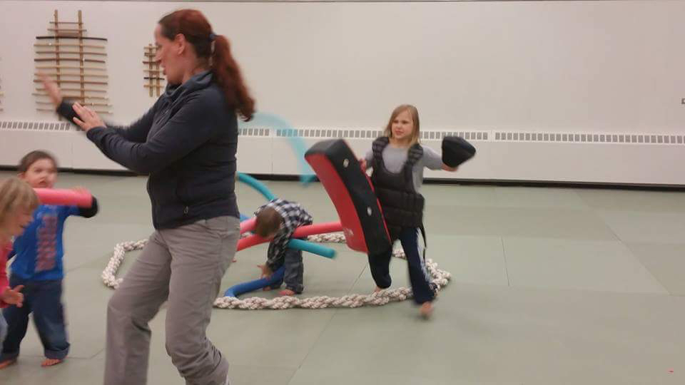

<!DOCTYPE html><html lang="en"><head><meta charset="utf-8"><meta name="viewport" content="width=device-width, initial-scale=1, shrink-to-fit=no"><meta http-equiv="x-ua-compatible" content="ie=edge"><link rel="stylesheet" type="text/css" href="https://fonts.googleapis.com/css?family=Lato:300,400|Open+Sans:300,400,700,800|Roboto:400,900"><link rel="stylesheet" type="text/css" href="https://maxcdn.bootstrapcdn.com/font-awesome/4.6.3/css/font-awesome.min.css"><link rel="stylesheet" type="text/css" href="https://cdnjs.cloudflare.com/ajax/libs/animate.css/3.5.2/animate.min.css"><link rel="stylesheet" href="//blueimp.github.io/Gallery/css/blueimp-gallery.min.css"><link rel="stylesheet" href="css/bootstrap-image-gallery.min.css"><link rel="stylesheet" type="text/css" href="css/style.css"><title>The Streak Of Tigers</title></head></html><body><div class="container-fluid"><div class="row"><div class="jumbo-about"><div class="container"><div class="row"><div class="col-md-2 light-nav"><div class="row"><div class="col-xs-12"><em>STREAK</em><br><em>OF</em><br><em>TIGERS</em></div></div><div class="row"><div class="text-md-center"><p>NAKA IMA</p><p>AIKIDO</p></div></div></div><div class="col-md-2 dark-nav"><ul class="nav"><li class="nav-item"><a href="index.html" class="nav-link text-uppercase">home</a></li><li class="nav-item"><a href="about.html" class="nav-link active text-uppercase">about</a></li><li class="nav-item"><a href="schedule.html" class="nav-link text-uppercase">schedule</a></li><li class="nav-item"><a href="photos.html" class="nav-link text-uppercase">photos</a></li><li class="nav-item"><a href="contact.html" class="nav-link text-uppercase">contact</a></li></ul></div></div></div></div></div></div><nav id="element" class="navbar navbar-light navbar-fixed-top bg-faded hidden-xs-up animated"><div class="container"><button type="button" data-toggle="collapse" data-target="#exCollapsingNavbar2" aria-controls="exCollapsingNavbar2" aria-expanded="false" aria-label="Toggle navigation" class="navbar-toggler hidden-sm-up">&#9776;</button><div id="exCollapsingNavbar2" class="collapse navbar-toggleable-xs"><a href="#" class="navbar-brand"><span>Streak Of Tigers</span></a><ul class="nav navbar-nav pull-md-right"><li class="nav-item"><a href="index.html" class="nav-link text-uppercase">home</a></li><li class="nav-item active"><a href="about.html" class="nav-link text-uppercase">about</a></li><li class="nav-item"><a href="schedule.html" class="nav-link text-uppercase">schedule</a></li><li class="nav-item"><a href="photos.html" class="nav-link text-uppercase">photos</a></li><li class="nav-item"><a href="contact.html" class="nav-link text-uppercase">contact</a></li></ul></div></div></nav><div class="container"><div class="about-padding"><div class="row"><div class="col-md-3"><h2 class="sectionTitle">Sylvie Bougon</h2></div></div><div class="row"><div class="col-md-6"><p>Sylvie Bougon, 2nd Kyu. Sylvie was born in France and came to Canada in 1988. Sylvie has been assisting with the Tigers program since she began training at Naka Ima in 2011. Sylvie also runs the Streak of Tiger’s Sunday fencing and art programs. She has 15 years of background in European fencing, and holds a bachelor’s degree in Fine Arts from "Ecole d'art de Luminy, (Marseille, France), and a bachelor’s honours degree in Graphic Design from George Brown College. Sylvie has won many awards for illustration in design magazines, including 3 awards for graphic design. Her work has been shown in galleries. She loves to teach art to children and adults as it develops subtle layers of intelligence, focus, observation, and creativity that leads to a happy life with vision and passion.</p></div><div class="col-md-5 push-md-1"></div></div></div></div><footer><div class="container"><div class="row"><div class="col-md-1"><i class="fa fa-map-marker fa-5x"></i></div><div class="col-md-3"><p class="text-uppercase lead">naka ima aikikai aikido</p><p>473 Oakwood Ave</p><p>Toronto, ON M6C 2R5</p></div><div class="col-md-1"><i class="fa fa-mobile fa-5x"></i></div><div class="col-md-3"><p>@StreakOfTIgers</p><p class="text-uppercase">phone: 416.259.4320</p><p class="text-uppercase">email: info@nakaima.ca</p></div><div class="col-md-1"></div><div class="col-md-1"><a href="https://www.youtube.com/user/TheAikiFIt"><i class="fa fa-youtube-square fa-4x"></i></a></div><div class="col-md-1"><a href="http://www.facebook.com/NIAstreakoftigers"><i class="fa fa-facebook-square fa-4x"></i></a></div><div class="col-md-1"><a href="https://www.instagram.com/streakoftigers/"><i class="fa fa-instagram fa-4x"></i></a></div></div></div></footer><script src="https://ajax.googleapis.com/ajax/libs/jquery/3.0.0/jquery.min.js" integrity="sha384-THPy051/pYDQGanwU6poAc/hOdQxjnOEXzbT+OuUAFqNqFjL+4IGLBgCJC3ZOShY" crossorigin="anonymous"></script><script src="https://cdnjs.cloudflare.com/ajax/libs/tether/1.2.0/js/tether.min.js" integrity="sha384-Plbmg8JY28KFelvJVai01l8WyZzrYWG825m+cZ0eDDS1f7d/js6ikvy1+X+guPIB" crossorigin="anonymous"></script><script src="https://maxcdn.bootstrapcdn.com/bootstrap/4.0.0-alpha.3/js/bootstrap.min.js" integrity="sha384-ux8v3A6CPtOTqOzMKiuo3d/DomGaaClxFYdCu2HPMBEkf6x2xiDyJ7gkXU0MWwaD" crossorigin="anonymous"></script><script src="js/navbar.js"></script></body>